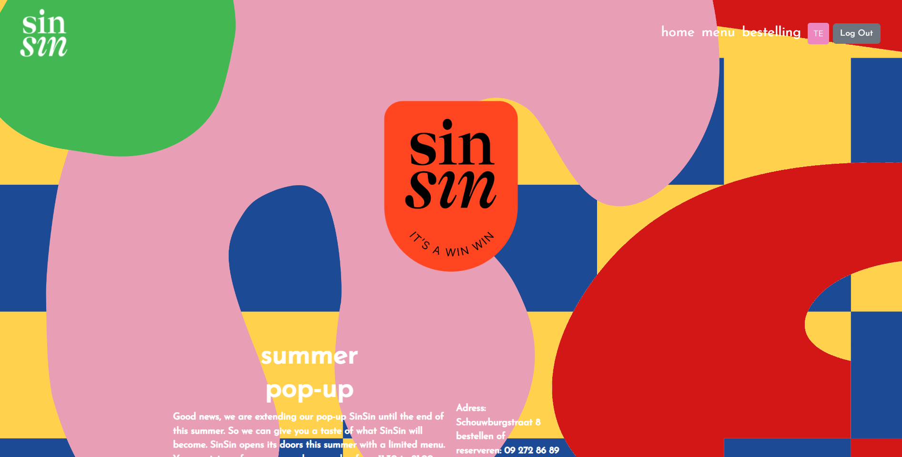

Gilles Van Cleemput 182542gv
Logingegevens
dit is een admin account
dit is een user account
Mijn web project gaat over een nieuwe vegan food bar in Gent genaamd SinSin. De food bar bestaat sinds de zomer van 2022 en wordt open gehouden door mijn schoonzus. De foodbar wou zelf een website hebben waar mensen op konden bestellen. Hier door zouden ze geen ubereats of takeaway moeten betalen om hun services te kunnen gebruiken.

componenten
routing
state-management
hooks
varia
datalaag
repositorylaag
servicelaag met een zekere complexiteit
REST-laag
varia
README.mdHoe heb je jouw applicatie gestructureerd (mappen, design patterns, hiërarchie van componenten, state...)? Ik heb mijn applicatie onderverdeeld in componenten voor elke pagina. Ik bouw dan de pagina op met zulke componenten. Het eerste component in een map is het hoofd component waar de rest op wordt gebouwd.
Hoe heb je jouw applicatie gestructureerd (mappen, design patterns...)? Ik heb de rest API gestructureerd zoals in de de les. Ik heb de rest api opgesplitst in het 3 lagen model rest, service en repository.
Voor mijn front-end project heb ik de extra technologie emailjs gebruikt. Het is een javascript library dat help met versturen van emails door alleen client-side technologie te gebruiken. Het heeft geen server nodig je hoeft alleen een supported email service gebruiken zoals gmail en een van hun SDK libraries versturen de email. link: https://www.npmjs.com/package/emailjs
De extra technologie dat ik heb gebruikt in het web services project is swagger.
Swagger is een open-source software framework.
Met Swagger kun je de structuur van je API's beschrijven zodat machines ze kunnen lezen.
link: https://www.npmjs.com/package/swagger
Ik heb een test geschreven van het aanpassen van een user account. De test navigeert zich eerst naar de form om de user te weizigen. De form wordt ingevuld en bevestigd. Er wordt dan gekeken of de user effectief is aangepast door naar de user info pagina te navigeren. De tweede test is het plaatsen van een bestelling. De test vult eerst de winkelmand aan om dan verder te gaan de bestelling pagina. Op de bestelling pagina wordt de bestelling bevestigd. Na het bevestigen van de bestelling wordt er genavigeert naar de pagina waar de bestelling history wordt getoont en wordt er gecontroleert of de bestelling is geplaatst.
De eerste test werd geschreven over de het menu. De test probeert de GET, POST, PUT en DELETE van de API voor de menu tabel. De tweede test werd geschreven over de user tabel. De test probeert de checkforuser GETbyAuthId en het aanmaken van een user.
Swagger heeft enkele problemen. Sommige beschrijvingen in de web voorstelling van swagger willen niet uitvoeren. Dit is omdat de gebruiken niet is geautoriseerd voor die api calls uit te voeren. Ook zijn de fout codes van swagger niet goed gelinked en staat er gewoon string als uitvoer in de plaats van de gepaste melding zoald 404 niet gevonden.
Als de backend testen worden uitgevoerd is er een error dat te maken heeft met swagger dit hindert te testen niet. Alle testen worden nog correct uitgevoerd en geslaagd.